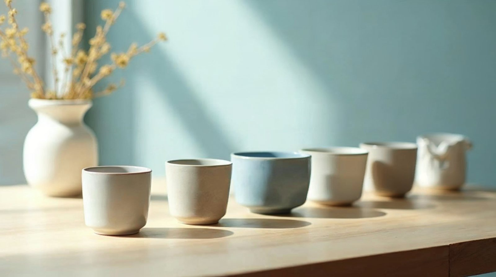
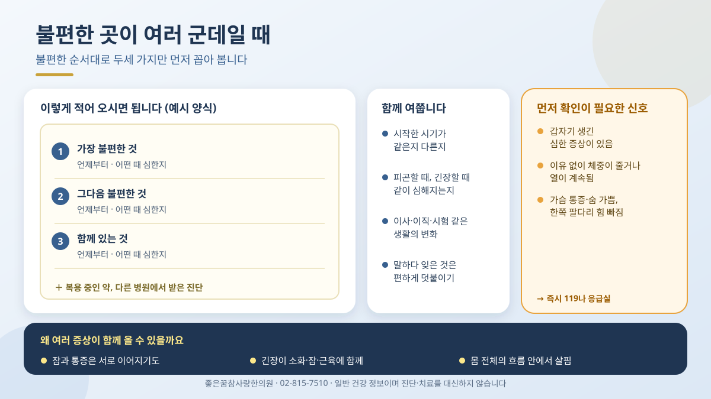

이종호 한의사 감수좋은꿈참사랑한의원 대표원장 (한의사 면허번호 19769)발행 2026-11-23 · 수정 2026-11-26
이 글의 차례
- 왜 여러 증상이 함께 나타날 수 있나요
- 먼저 이렇게 여쭙니다
- 일상에서 먼저 해 볼 수 있는 것
- 한의원에서 함께 살필 수 있는 경우
- 자주 하는 오해
- 예를 들면 이런 경우입니다
- 스스로 점검해 보세요
- 이렇게 기록해 오시면 상담이 쉬워집니다
- 증상 목록은 이렇게 만들어 보세요
- 왜 아픈 곳 말고 잠과 소화까지 여쭐까요?
- 진료 시간이 짧게 느껴질 때는 이렇게 시작해 보세요
- 여러 병원을 다니고 있다면
- 우선순위는 진료 중에 바뀔 수 있습니다
- 증상끼리 이어져 있는지 스스로 살펴보는 방법
- 오래된 증상은 이렇게 짧게 정리하세요
- 말로 설명하기 어려운 증상이라면
- 왜 마음 상태도 함께 여쭐까요?
- 가족이 함께 오면 도움이 되는 경우
- 첫 진료 뒤에는 목록을 이렇게 고쳐 두세요
- 증상마다 '언제 심해지는지'를 적어 보세요
- 진료 중에 떠오른 증상은 언제 말해도 됩니다
- 한 번에 다 말하지 못해도 괜찮습니다
- 증상이 너무 많아 지쳐 있다면
- 왜 처음 오시는 날 시간을 넉넉히 잡으면 좋을까요?
- 이런 증상은 먼저 확인이 필요합니다
- 무엇을 먼저 말할지 고르는 기준
- 처음 오시면 이렇게 진행합니다
- 관련 글
불편한 곳이 여러 군데라면 일상에서 가장 힘든 한두 가지를 먼저 말씀하시고, 나머지는 한 줄씩 덧붙이시면 됩니다. 허리, 소화, 잠이 한꺼번에 불편해 어디서부터 말해야 할지 막막한 분이 많지만, 모두 중요하니 빠짐없이 말씀하셔도 괜찮습니다. 증상끼리 관련이 있는지는 진료실에서 함께 정리합니다.
왜 여러 증상이 함께 나타날 수 있나요
- 잠을 설치면 통증과 피로에 예민해지고, 통증 때문에 잠을 설치는 일이 서로 이어질 수 있습니다.
- 긴장과 스트레스가 이어지면 소화, 잠, 근육 긴장이 함께 흔들리는 경우가 많습니다.
- 같은 시기에 시작된 증상은 생활의 변화(이사, 이직, 시험)와 이어져 있기도 합니다.
- 한의학에서는 여러 불편을 몸 전체의 흐름 안에서 함께 살핍니다.
먼저 이렇게 여쭙니다
- 일상에서 불편함이 큰 순서대로 두세 가지를 꼽는다면 무엇인가요?
- 각각 언제부터 시작되었고, 시기가 같나요, 다른가요?
- 증상이 같은 때 심해지나요? 피곤할 때, 스트레스 받을 때를 떠올려 보세요.
- 최근 생활에 큰 변화가 있었나요?
일상에서 먼저 해 볼 수 있는 것
- 증상을 종이에 한 줄씩 적고 특히 불편한 것에 표시하기
- 각 증상이 시작된 시기를 옆에 적어 두기
- 일주일 동안 증상이 심했던 날과 그날 있었던 일 적기
- 말하다 잊은 것은 진료 중 편하게 덧붙이기
한의원에서 함께 살필 수 있는 경우
- 여러 증상이 같은 시기에 시작되었을 때 생활과 몸의 전체 흐름을 함께 여쭙니다.
- 증상이 번갈아 나타날 때 시간대와 상황을 같이 확인합니다.
- 우선순위가 헷갈릴 때 일상에 가장 큰 지장을 주는 것부터 함께 정합니다.
좋은꿈참사랑한의원에서는 모든 분께 맥부터 짚으며 적어 오신 목록을 함께 보고 우선순위를 정한 뒤, 침·추나·한약 상담 등 그날 상태에 맞는 방법을 고릅니다.

자주 하는 오해
- 한 번에 한 가지만 말해야 한다고 여기는 분이 많지만, 여러 증상을 함께 들어야 서로 이어진 부분이 보일 때가 있습니다.
- 사소해 보이는 증상은 빼도 된다고 생각하기 쉽지만, 잠이나 배변 변화처럼 작은 단서가 정리에 도움이 되기도 합니다.
- 증상이 많으면 진료를 귀찮아할까 걱정하는 분도 있는데, 편하게 말씀하셔도 됩니다.
예를 들면 이런 경우입니다
- 예를 들어 허리 통증, 더부룩함, 새벽에 깨는 잠이 함께 있는 경우라면, 세 가지가 시작된 시기를 나란히 적어 보면 같은 무렵 이직이나 이사 같은 변화가 있었는지 대화가 자연스럽게 이어집니다.
- 예를 들어 두통과 목 결림, 눈 피로가 함께 있는 분이라면, 셋이 같은 시간대(오후, 모니터 작업 뒤)에 심해지는지부터 여쭙고 자세와 쉬는 간격을 함께 살핍니다.
- 예를 들어 오래된 무릎 통증이 있는데 최근 한 달 사이 소화가 갑자기 나빠진 경우라면, 오래된 증상보다 새로 생긴 변화를 먼저 말씀해 주세요. 새로 생긴 변화가 더 먼저 살펴야 할 단서일 때가 있습니다.
스스로 점검해 보세요
- 불편한 곳을 세 가지 이상 꼽을 수 있다
- 여러 증상이 비슷한 시기에 시작되었다
- 피곤하거나 긴장한 날 여러 증상이 함께 심해진다
- 잠을 설친 다음 날 통증이나 소화가 더 불편하다
- 최근 몇 달 사이 이사, 이직, 시험 같은 큰 변화가 있었다
- 여러 병원에서 각각 다른 약을 받아 먹고 있다
- 최근 새로 생긴 증상이 하나라도 있다
해당하는 항목이 많을수록 증상을 한 줄씩 적어 오시면 진료 시간을 알차게 쓸 수 있습니다. 마지막 항목에 해당한다면 그 증상을 목록 맨 위에 적어 주세요.
이렇게 기록해 오시면 상담이 쉬워집니다
- 증상 목록과 불편한 순서
- 각 증상이 시작된 시기
- 증상이 함께 심해진 날과 그날의 상황
- 복용 중인 약과 다른 병원에서 받은 진단
증상 목록은 이렇게 만들어 보세요
종이에 네 칸을 만들어 보세요. 증상, 시작한 때, 심해지는 때, 일상에 주는 지장(1~3점)입니다. 예를 들어 "허리 / 석 달 전 / 오래 앉은 오후 / 3점", "더부룩함 / 한 달 전 / 저녁 늦게 먹은 날 / 2점"처럼 한 줄씩 채우면 됩니다.
다 채우지 못한 칸이 있어도 괜찮습니다. 비어 있는 칸은 진료실에서 함께 여쭈며 채웁니다. 목록을 건네주시면 말로 설명하느라 놓치는 부분이 줄어듭니다.
왜 아픈 곳 말고 잠과 소화까지 여쭐까요?
허리 때문에 왔는데 잠이나 대변을 물어 의아해하시는 분이 있습니다. 잠이 얕으면 통증을 더 예민하게 느끼고, 긴장이 이어지면 속도 함께 불편해지는 경우가 많아서입니다.
이런 단서를 함께 들으면 여러 증상 가운데 무엇이 먼저 흔들렸는지 짐작하는 데 도움이 됩니다. 그래서 목록에 잠든 시각, 깨는 횟수, 대변 상태를 한 줄씩 함께 적어 오시기를 권합니다.
진료 시간이 짧게 느껴질 때는 이렇게 시작해 보세요
진료실에 들어오시면 첫 문장으로 가장 힘든 것 하나와 함께 불편한 것을 한 번에 말씀해 보세요. "오늘은 허리가 제일 힘들고, 소화와 잠도 같이 불편해요"처럼요. 이렇게 시작하면 전체를 먼저 알고 순서를 정할 수 있습니다.
그날 다 다루지 못한 증상은 사라지지 않습니다. 진료 기록에 남겨 두고 다음 진료에서 이어서 여쭙니다. 한 번에 모두 해결하려 애쓰지 않으셔도 됩니다.
여러 병원을 다니고 있다면
증상마다 다른 과에 다니다 보면 진단명과 약이 여기저기 흩어집니다. 병원 이름, 진단명, 받은 약을 한 장에 모아 오시면 전체 그림을 보기 쉬워집니다.
여러 곳에서 받은 약끼리 겹치는 것이 있는지는 약국이나 처방한 병원에 확인해 주세요. 한의원에서는 그 목록을 참고해 몸 전체의 흐름을 함께 살피고, 한약을 상담할 때도 그 약들을 확인합니다.
우선순위는 진료 중에 바뀔 수 있습니다
허리가 한결 편해지자 그동안 묻혀 있던 잠 문제가 더 신경 쓰인다는 분이 많습니다. 하나가 가벼워지면 다른 증상이 앞으로 나오는 것은 자연스러운 일입니다.
그럴 때는 다음 진료에서 지금 가장 힘든 것이 무엇인지 다시 말씀해 주세요. 목록의 순서를 함께 고쳐 적고, 그에 맞춰 살필 것과 집에서 할 일도 다시 정합니다.
증상끼리 이어져 있는지 스스로 살펴보는 방법
일주일 동안 달력에 증상마다 다른 기호를 그려 보세요. 허리는 동그라미, 소화는 세모, 잠은 별표처럼요. 증상이 있던 날 그 기호를 그리기만 하면 됩니다.
일주일이 지나 보면 기호들이 같은 날 몰려 있는지, 따로 흩어져 있는지가 보입니다. 같은 날 몰려 있다면 그날 무슨 일이 있었는지 한 줄 덧붙여 오세요. 증상끼리의 관계를 이야기하는 좋은 출발점이 됩니다.
오래된 증상은 이렇게 짧게 정리하세요
몇 년째 이어진 증상은 이야기가 길어지기 쉽습니다. 처음 시작한 시기, 그동안 받아 본 검사나 치료, 요즘 달라진 점 세 가지만 적어 오시면 충분합니다.
특히 요즘 달라진 점이 중요합니다. 같은 증상이라도 최근 더 자주 생기는지, 더 오래 가는지, 심해지는 상황이 바뀌었는지를 알려 주시면 무엇부터 살필지 정하기 쉬워집니다.
말로 설명하기 어려운 증상이라면
어디가 어떻게 불편한지 말로 옮기기 어려울 때는 비유를 써 보세요. 찌르는 듯한, 묵직한, 화끈한, 저릿한, 조이는 듯한 느낌처럼요. 정확하지 않아도 괜찮습니다.
종이에 사람 모양을 간단히 그리고 불편한 자리에 표시해 오셔도 좋습니다. 진료실에서 직접 손으로 짚어 보여 주시는 것도 도움이 됩니다.
왜 마음 상태도 함께 여쭐까요?
걱정이 많거나 마음이 바쁜 시기에는 여러 곳이 한꺼번에 불편해지는 일이 흔합니다. 마음의 긴장이 잠과 소화, 근육의 뻣뻣함과 함께 움직이는 경우가 많기 때문입니다.
그래서 요즘 마음이 어떤지도 편하게 여쭙니다. 대답하기 어려우시면 넘어가셔도 됩니다. 다만 마음 이야기가 증상의 순서를 정하는 데 단서가 되는 경우가 있어, 떠오르는 것이 있으면 한마디 덧붙여 주세요.
가족이 함께 오면 도움이 되는 경우
본인은 잘 모르는 변화를 가족이 먼저 알아채는 경우가 있습니다. 밤에 자주 뒤척이는지, 식사량이 줄었는지, 예전보다 쉽게 지치는지 같은 것들입니다.
가족이 함께 오기 어렵다면 집에서 가족에게 "요즘 내가 달라 보이는 게 있어?" 하고 물어 메모해 오셔도 좋습니다. 본인의 목록에 그 한 줄을 더하면 그림이 더 또렷해집니다.
첫 진료 뒤에는 목록을 이렇게 고쳐 두세요
첫 진료가 끝나면 목록 옆에 오늘 먼저 살핀 것과 다음에 이어서 볼 것을 표시해 두세요. 다음 진료까지 새로 생긴 증상이나 사라진 증상이 있다면 그때그때 적어 넣으면 됩니다.
이 목록이 쌓이면 진료가 이어질수록 어떤 증상이 먼저 가벼워졌는지, 무엇이 남아 있는지 한눈에 볼 수 있습니다.
증상마다 '언제 심해지는지'를 적어 보세요
같은 두통이라도 아침에 일어날 때 심한지, 오후 모니터 작업 뒤에 심한지에 따라 살필 곳이 달라집니다. 증상마다 하루 중 심해지는 시간대와 상황을 한 단어씩 적어 오세요.
여러 증상의 시간대가 겹친다면 그 시간에 무엇을 하고 있었는지가 중요한 단서가 됩니다. 예를 들어 오후 세 시쯤 목, 눈, 속이 함께 불편하다면 그 시간의 자세와 식사, 쉬는 간격을 함께 살펴봅니다.
진료 중에 떠오른 증상은 언제 말해도 됩니다
진료를 받다가 문득 잊고 있던 증상이 떠오르기도 합니다. 순서가 지났다고 망설이지 말고 그 자리에서 "그러고 보니 이것도 있어요"라고 말씀해 주세요.
진료실을 나선 뒤에 떠올랐다면 목록에 적어 두었다가 다음 진료 때 맨 앞에 말씀해 주시면 됩니다. 사소해 보이는 한 줄이 전체를 정리하는 데 실마리가 되기도 합니다.
한 번에 다 말하지 못해도 괜찮습니다
긴장하면 준비한 것도 절반쯤 잊어버리는 것이 자연스럽습니다. 목록을 건네주시고, 말로는 가장 힘든 것만 이야기하셔도 진료는 충분히 시작할 수 있습니다. 나머지는 목록을 보며 제가 하나씩 여쭙겠습니다.
증상이 너무 많아 지쳐 있다면
여러 곳이 동시에 불편하면 몸만큼 마음도 지칩니다. 어디서부터 손대야 할지 몰라 진료를 미뤄 왔다는 분도 많습니다. 그럴수록 다 정리해서 오려고 애쓰지 않으셔도 됩니다.
"여기저기 다 불편해서 어디서부터 말해야 할지 모르겠어요"라는 한 문장으로 시작하셔도 괜찮습니다. 그 말부터 듣고, 하루를 어떻게 보내시는지 여쭈며 순서를 함께 찾아가겠습니다.
왜 처음 오시는 날 시간을 넉넉히 잡으면 좋을까요?
증상이 여러 가지라면 이야기를 듣고 진찰하는 데 시간이 조금 더 걸릴 수 있습니다. 진료 뒤 바로 이어지는 일정이 있으면 마음이 급해져 중요한 이야기를 빠뜨리기 쉽습니다. 첫날만큼은 앞뒤로 여유를 두고 오시면 차분하게 이야기를 나눌 수 있습니다.
첫날 시간이 빠듯하다면 그날은 가장 힘든 것 위주로 살피고, 나머지는 다음 진료에서 이어서 여쭙는 방식으로 나눠 진행할 수도 있습니다.
이런 증상은 먼저 확인이 필요합니다
- 여러 증상 가운데 갑자기 생긴 심한 증상이 있거나, 이유 없이 체중이 줄거나 열이 며칠째 이어지는 경우
- 가슴 통증이나 숨 가쁨, 한쪽 팔다리 힘 빠짐 가운데 하나라도 있는 경우
이런 신호가 있으면 한의원보다 가까운 병원이나 응급실을 먼저 찾으세요.
무엇을 먼저 말할지 고르는 기준
- 최근 며칠 사이 새로 생겼거나 갑자기 심해진 증상은 순서와 상관없이 가장 먼저 말씀해 주세요.
- 그다음은 잠, 출근, 집안일처럼 일상을 가장 크게 막는 증상입니다.
- 몇 달, 몇 년 이어진 증상은 시작 시기와 최근 달라진 점만 짧게 덧붙이셔도 됩니다.
- 우선순위가 낮다고 여긴 증상이라도 2주 넘게 계속 나빠지고 있다면 따로 표시해 두세요.
처음 오시면 이렇게 진행합니다
첫 방문에는 접수 때 기본 정보를 적고, 진료실에서는 모든 분께 그러듯 맥부터 짚으며 적어 오신 증상 목록을 함께 봅니다. 불편한 순서와 각 증상의 시작 시기, 심해지는 상황을 여쭙고, 필요하다고 판단될 때 설진·복진이나 초음파를 더합니다.
그 뒤 오늘 먼저 다룰 것과 다음에 이어서 살필 것을 나누어 설명드리고, 집에서 기록해 볼 항목을 안내합니다. 다른 병원에서 받은 검사 결과나 복용 중인 약 목록이 있다면 함께 가져오시면 정리에 도움이 됩니다. 처음 오시는 날은 진찰 시간이 있어 재진보다 오래 걸릴 수 있습니다.
관련 글

여쭙는 것
- 일상에서 불편함이 큰 순서대로 두세 가지를 꼽는다면 무엇인가요?
- 각각 언제부터 시작되었고, 시기가 같나요, 다른가요?
- 증상이 같은 때 심해지나요? 피곤할 때, 스트레스 받을 때를 떠올려 보세요.
생활에서 해 볼 것
- 증상을 종이에 한 줄씩 적고 특히 불편한 것에 표시하기
- 각 증상이 시작된 시기를 옆에 적어 두기
- 일주일 동안 증상이 심했던 날과 그날 있었던 일 적기
한의원에서 함께 살필 것
- 여러 증상이 같은 시기에 시작되었을 때 생활과 몸의 전체 흐름을 함께 여쭙니다.
- 증상이 번갈아 나타날 때 시간대와 상황을 같이 확인합니다.
- 우선순위가 헷갈릴 때 일상에 가장 큰 지장을 주는 것부터 함께 정합니다.
먼저 확인이 필요한 신호
- 여러 증상 가운데 갑자기 생긴 심한 증상이 있거나, 이유 없이 체중이 줄거나 열이…
- 가슴 통증이나 숨 가쁨, 한쪽 팔다리 힘 빠짐 가운데 하나라도 있는 경우
한눈에 보는 표
| 구분 | 핵심 |
|---|---|
| 여쭙는 것 | 일상에서 불편함이 큰 순서대로 두세 가지를 꼽는다면 무엇인가요? 각각 언제부터 시작되었고, 시기가 같나요, 다른가요? |
| 생활에서 해 볼 것 | 증상을 종이에 한 줄씩 적고 특히 불편한 것에 표시하기 각 증상이 시작된 시기를 옆에 적어 두기 |
| 한의원에서 함께 살필 것 | 여러 증상이 같은 시기에 시작되었을 때 생활과 몸의 전체 흐름을 함께 여쭙니다. 증상이 번갈아 나타날 때 시간대와 상황을 같이 확인합니다. |
| 먼저 확인이 필요한 신호 | 여러 증상 가운데 갑자기 생긴 심한 증상이 있거나, 이유 없이 체중이 줄거나 열이 며칠째 이어지는 경우 가슴 통증이나 숨 가쁨, 한쪽 팔다리 힘 빠짐 가운데 하나라도 있는 경우 |
자주 묻는 질문
관련 없어 보이는 증상도 말해야 하나요?
네. 서로 관련이 있을 수 있어 말씀해 주시면 도움이 됩니다.
증상이 너무 많아서 정리가 안 돼요.
말씀하시는 대로 들으며 함께 정리합니다.
한 번에 다 치료하나요?
상태를 보며 우선순위를 정해 단계적으로 살핍니다.
좋은꿈참사랑한의원은 재진 때 지난번 이야기부터 이어서 여쭙니다. 진료시간과 예약은 오시는 길에서 확인하세요.
어디서 상담받을 수 있나요?
좋은꿈참사랑한의원은 서울 동작구 만양로2길 2 신성빌딩 3층·5층(서울 동작구 상도동, 7호선 상도역 3번 출구 근처)에 있습니다. 한의사 3명(이종호 대표원장, 조영기 수석진료원장, 정원영 진료원장)이 진료합니다. 진료시간은 평일 09:30~20:00(점심 13:00~14:00), 토·일·공휴일 09:30~15:00이며, 방문 전 전화로 확인을 권합니다. 예약은 네이버 예약, 카카오톡 상담, 전화 02-815-7510로 받습니다.
이 글은 일반적인 건강 정보이며 개인의 진단이나 치료를 대신하지 않습니다. 증상이 있거나 복용 중인 약이 있다면 진료를 통해 확인하세요. 치료 효과는 개인마다 다를 수 있습니다.
작성 기준: 일반적으로 알려져 있는 건강 정보를 참고해 정리했습니다(대표원장 감수). 증상 기록은 1~2주 동안 하루 1회, 비슷한 시간에 적어 오시면 지난 상태와 비교하기 쉽습니다.